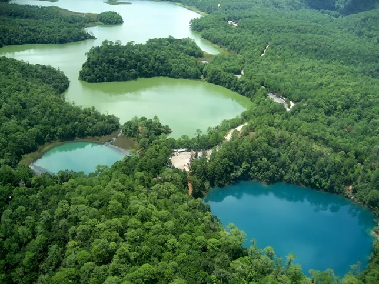

LAGO OJO DEL MAR
Un lugar realmente curioso y desconocido para la mayoría de los turistas… e incluso para los habitantes del país. El llamado Ojo de Mar llama la atención ya con su nombre porque en Paraguay no hay mares… sino ríos y demás espejos de agua dulce.
Un lago con nombre de mar
En la localidad de Bella Vista podemos encontrar, como sucede en casi todo Paraguay, una gran cantidad de ríos, lagos y arroyos…. Uno de los más impresionantes es el llamado Ojo de Mar, una laguna bellísima muy cerca del Abismo de Mar (otro lago), los cerros de la cordillera del Amambay, los arroyos Estrella y Negla y el río Apa.A unos 50 kilómetros de la frontera con Brasil (donde conviven las ciudades hermanadas Bella Vista y Bela Vista), podemos encontrar este lago calcáreo, que está dentro de la propiedad de Colonia Rinconada. Para llegar al Ojo de Mar debes atravesar una senda selvática donde mejor que no llueva… o puede que te quedes a mitad de camino.